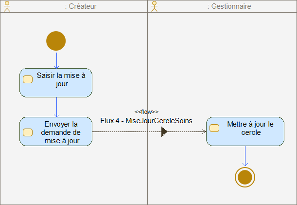

Cercle De Soins
2.0.1 - final-text

Cercle De Soins
2.0.1 - final-text

Cercle De Soins - Local Development build (v2.0.1) built by the FHIR (HL7® FHIR® Standard) Build Tools. See the Directory of published versions
This page includes translations from the original source language in which the guide was authored. Information on these translations and instructions on how to provide feedback on the translations can be found here.
This document presents the study of functional specifications for exchanges to implement a mechanism for managing the circle of care for an individual in the healthcare, medico-administrative, medico-social, and social fields. The circle of care allows identifying all the stakeholders (individuals, professionals, and organizations) participating in the care and coordination actions of the individual's health journey.
The study conducted concerns the modeling of flows that exist between digital health applications and services accessible via computer, smartphone, or tablet that participate and contribute to managing the circle of care for an individual. It encompasses actions of feeding and consulting the circle of care of an individual according to various search criteria presented in this document.
Note that the functional specifications for exchanges are interoperability specifications that do not aim to define the internal structure and urbanization of information systems nor to address the management of authorizations. The management of authorizations related to the creation, updating, and consumption of the Circle of Care must be the subject of a prior study before any implementation of these interfaces in compliance with the regulatory framework for the exchange and sharing of health data.
Furthermore, the security constraints concerning the exchanged flows are not addressed in this document. Indeed, the aspects related to security are the responsibility of the information system implementing them.
These "technical" requirements are implemented by the transport and service layers of the CI-SIS.
This section presents two non-exclusive examples of using a circle of care. These specifications do not apply only to these use cases and can involve different actors.
Context 1: A 75-year-old person living alone at home suffers from cognitive disorders and has a chronic inflammatory lung disease (COPD). They are followed every month by their general practitioner, who has the support of a Coordination Support Device (DAC) in their territory for coordinating and managing their patient. Among the coordination actions set up by the general practitioner and the coordinating doctor of the DAC, a nurse visits the person's home daily to administer treatments. Similarly, a physiotherapist visits daily to maintain their physical activity and strengthen their respiratory capacity.
Use Case 1: The person is taken care of for the first time by the DAC, which creates their circle of care in their digital coordination support tool. All the professionals intervening with the cared-for person are listed in the circle of care with their contact details.
Use Case 2: The person falls at home and contacts emergency services. They are taken care of by an ambulance that transports them to the emergency care unit of a healthcare facility in their territory. The emergency doctor becomes aware of the person's circle of care in the facility's Electronic Patient Record, which allows the healthcare facility to contact the person's general practitioner and the DAC to organize their discharge.
Use Case 3: The self-employed nurse moves, the person chooses a new nurse. The DAC updates the person's circle of care in their digital coordination support tool according to the new professionals intervening with the cared-for person.
Context 2: A 62-year-old person suffers from diabetes and is regularly followed by their diabetologist practicing in a private clinic. Follow-up with a dietitian is also set up.
Use Case 1: The person is taken care of for the first time by the diabetologist, who creates the circle of care in their clinic management tool. All the professionals intervening with the cared-for person are listed in the circle of care with their contact details.
There is no legal definition of the circle of care as such. The "circle of care" of an individual can be defined as the grouping of individuals, professionals, and organizations intervening in the care of the individual in the healthcare, medico-administrative, medico-social, and social fields. The "circle of care" of an individual can therefore consist of members of their care team, other professionals, organizations, their caregivers, their trusted person, or their legal representatives.

The notion of "care team" was defined in Law No. 2016-41 of January 26, 2016, and in the texts that follow from it:
According to Article L. 1110-12 of the Public Health Code, the care team is a group of professionals who directly participate, for the benefit of the same patient, in the performance of a diagnostic, therapeutic, disability compensation, pain relief, or prevention of loss of autonomy act, or in the actions necessary for the coordination of several of these acts, and who:
1° Either practice in the same healthcare establishment, within the health service of the armed forces, in the same social or medico-social establishment or service mentioned in I of Article L. 312-1 of the Social Action and Families Code or within the framework of a cooperation structure, shared practice, or healthcare or medico-social coordination appearing on a list set by decree;
2° Or have been recognized as members of the care team by the patient who turns to them for the performance of consultations and acts prescribed by a doctor to whom they have entrusted their care;
3° Or practice in an entity, including at least one healthcare professional, with a formalized organization and practices in accordance with a terms of reference set by an order of the minister responsible for health.
Several legal definitions of the "caregiver" close to the cared-for individuals can be found in the various French legal codes (Social Action and Families Code, Social Security Code, Labor Code…).
If we refer to its definition in the Public Health Code, Article L1111-6-1 specifies the status of the natural caregiver as a person chosen by the cared-for individual to accompany them in the gestures related to care prescribed by a doctor to promote their autonomy.
The law of March 4, 2002, relating to the rights of patients introduced the notion of "trusted person" of the cared-for individual in French law.
The law of February 2, 2016, creating new rights in favor of patients and persons at the end of life came to specify its contours codified in Article L1111-6 of the Public Health Code.
Article L1111-6 of the Public Health Code thus specifies that any adult may designate a trusted person who may be a relative, a close person, or the treating doctor and who will be consulted in case they themselves are unable to express their will and to receive the information necessary for this purpose. The trusted person reports the will of the person. Their testimony prevails over any other testimony. This designation is made in writing and co-signed by the designated person. It is revocable and revocable at any time.
If the patient wishes, the trusted person accompanies them in their procedures and attends medical consultations in order to help them in their decisions.
The designation of the trusted person is not mandatory. However, in the context of following their patient, the treating doctor ensures that their patient is informed of the possibility of designating a trusted person. Furthermore, upon any hospitalization, it is proposed to the patient to designate a trusted person. This designation is valid for the duration of the hospitalization, unless the patient states otherwise.
The designation of the trusted person is made in writing, on plain paper or as part of the drafting of advance directives.
A legal representative is a person legally designated to represent and defend the interests of another. The legal representative acts on behalf of and for the account of the person they represent.
For the minor child, their legal representation is incumbent, in the vast majority of cases, on the persons who exercise parental authority over the child (Art. 382 of the Civil Code).
When the holders of parental authority can no longer exercise it, the law has envisaged the situation in which the minor child is represented by a third party (the guardian), responsible for representing and defending their interests (Art. 390 to 413 of the Civil Code).
When a person of full age experiences an alteration of their mental faculties but also physical faculties (provided that it is of a nature to prevent the expression of their will) that places them in the impossibility of providing for their interests alone, the law envisages their protection while respecting individual freedoms according to four modes of protection: guardianship, curatorship, tutorship, and family authorization. In the case of tutorship, the person of full age is represented by a third party (the guardian), responsible for representing and defending their interests (Art. 440 and following of the Civil Code).
DAC IS: any application or digital service used by a DAC for coordination purposes (digital coordination service…)
Doctor IS: any application or digital service used by a Doctor (Practice Management Software, digital coordination service…)
The exchange and sharing of data related to a circle of care constitute a processing of personal data, which falls within the scope of application of the European General Data Protection Regulation (GDPR).
The target readers are primarily project managers as well as any person concerned with the project ownership and who specifies projects with interoperable interfaces.
The "Circle of Care" domain relates to the management of the circle of care for an individual in order to identify all the individuals, professionals, and organizations participating in their care in the healthcare, medico-administrative, medico-social, and social fields.

Figure 1 Organization of the business context of the "Circle of Care" study
The scope of the study includes the processes in color on the package diagram.
The "Circle of Care" domain contains a group of processes related to the management of the circle of care, including processes related to:
The "System" and "Person" actors represented in the following collaborative processes are given as examples. Only the "Role" actors are generic.

Figure 2: Collaborative Process "Creation of the Circle of Care"
| Expected Service | The creator of the circle of care sends a request to the manager of the circle of care to create the circle of care for the person. |
|---|---|
| Pre-conditions | The creator of the circle of care must first: - Be authorized; - Verify the absence of the circle of care for the person by the manager of the circle of care via a consultation request; - Have the parameters for creating the circle of care (and in particular the patient's identifier). |
| Post-conditions | N/A |
| Functional Constraints | N/A |
| Nominal Scenario | N/A |
Table 1 Characteristics of the collaborative process

Figure 3: Collaborative Process "Consultation of the Circle of Care"
| Expected Service | The consumer of the circle of care makes a request to consult the circle of care of the person in the manager of the circle of care in order to be able to retrieve it. |
|---|---|
| Pre-conditions | The consumer of the circle of care must first: - Be authorized; - Have the parameters of the request to consult the circle of care (and in particular the patient's identifier). |
| Post-conditions | N/A |
| Functional Constraints | N/A |
| Nominal Scenario | N/A |
Table 2 Characteristics of the collaborative process

Figure 4: Collaborative Process "Update of the Circle of Care"
| Expected Service | The creator of the circle of care sends a request to the manager of the circle of care to update (add, update, delete, etc.) the circle of care. |
|---|---|
| Pre-conditions | The creator of the circle of care must first: - Be authorized; - Have the parameters for updating the circle of care (and in particular the patient's identifier); - In the case where there are multiple contributors: have previously consulted the latest version of the circle of care for the person in the manager of the circle of care in order to guarantee the integrity of the information contained in the circle of care; |
| Post-conditions | N/A |
| Functional Constraints | N/A |
| Nominal Scenario | N/A |
Table 3 Characteristics of the collaborative process
| Actor | Description |
|---|---|
| Creator | The creator role embodied by a system can create or update the circle of care for a person. Examples of creators: digital coordination support service (DAC IS, General Practitioner IS), electronic patient record |
| Manager | The manager role embodied by a system manages and stores the circle of care and provides access to information in case of consultation. Examples of managers: electronic patient record, digital data sharing service |
| Consumer | The consumer role embodied by a system can consult a circle of care. Examples of consumers: an electronic patient record, a laboratory management system, a radiological information system, a practice management software, a digital coordination support service |
Table 4 Table of actors

Figure 5: Collaborative Process "Creation of the Circle of Care"
| Action | Description |
|---|---|
| Enter the Circle of Care | The creator of the circle of care enters the information related to the circle of care that is intended to be shared. |
| Send the Request | After validating the entry, the creator of the circle of care submits a request to create the circle of care to the manager of the circle of care. |
| Create the Circle of Care | The circle of care is created by the manager of the circle of care. |
Table 5 Table of actions
| Flow | Process | Sender | Receiver | Scope |
|---|---|---|---|---|
| Flow 1 - CreationCercleSoins | Creation of the Circle of Care | Creator | Manager | Yes |
Table 6 Flows

Figure 6: Collaborative Process "Consultation of the Circle of Care"
| Action | Description |
|---|---|
| Send a Consultation Request | The consumer of the circle of care sends a request to consult the circle of care to the manager of the circle of care, specifying the criteria for their search. |
| Consult the Response | The consumer consults the elements of the user's circle of care returned by the manager of the circle of care. |
| Search for the Circle of Care | The circle of care is searched for by the manager of the circle of care according to the criteria defined by the consumer of the circle of care. |
Table 7 Table of actions
| Flow | Process | Sender | Receiver | Scope |
|---|---|---|---|---|
| Flow 2 - RechercheCercleSoins | Consultation of the Circle of Care | Consumer | Manager | Yes |
| Flow 3 - ResultatRechercheCercleSoins | Consultation of the Circle of Care | Manager | Consumer | Yes |
Table 8 Flows

Figure 7: Collaborative Process "Update of the Circle of Care"
| Action | Description |
|---|---|
| Enter the Update | The creator of the circle of care updates the information related to the circle of care that is intended to be shared. |
| Send the Update Request | After validating the entry, the creator of the circle of care submits a request to update the circle of care to the manager of the circle of care. |
| Update the Circle | The circle of care is updated in the manager of the circle of care. |
Table 9 Table of actions
| Flow | Process | Sender | Receiver | Scope |
|---|---|---|---|---|
| Flow 4 - MiseJourCercleSoins | Update of the Circle of Care | Creator | Manager | Yes |
Table 10 Flows
| Flow | Process | Sender | Receiver | Scope |
|---|---|---|---|---|
| Flow 1 - CreationCercleSoins | Creation of the Circle of Care | Creator | Manager | Yes |
| Flow 2 - RechercheCercleSoins | Consultation of the Circle of Care | Consumer | Manager | Yes |
| Flow 3 - ResultatRechercheCercleSoins | Consultation of the Circle of Care | Manager | Consumer | Yes |
| Flow 4 - MiseJourCercleSoins | Update of the Circle of Care | Creator | Manager | Yes |
Table 11 Summary of identified flows
| Name | Description | Flow |
|---|---|---|
| CercleSoins | The Circle of Care is the aggregation of members who participate in the care and coordination actions of the health journey of an individual. The Circle of Care has an identifier, a start date, an end date, and an update date. | Flow 3 - ResultatRechercheCercleSoins Flow 1 - CreationCercleSoins Flow 4 - MiseJourCercleSoins Flow 2 - RechercheCercleSoins |
| MembreCercleSoins | The member of the circle of care can be: - a healthcare professional: general practitioner, pharmacist, self-employed nurse, etc., - an entity intervening in the care of the person, - the legal representative of the cared-for person, - the trusted person of the cared-for person, - the caregiver of the cared-for person. The circle of care provides the identity of the member as well as a means of communication with them. Each member of the Circle of Care has a start date and an end date of participation in this circle. |
Flow 3 - ResultatRechercheCercleSoins Flow 1 - CreationCercleSoins Flow 4 - MiseJourCercleSoins Flow 2 - RechercheCercleSoins |
| PersonnePriseCharge | Physical person benefiting from care, examinations, prevention acts, or services. | Flow 3 - ResultatRechercheCercleSoins Flow 1 - CreationCercleSoins Flow 4 - MiseJourCercleSoins Flow 2 - RechercheCercleSoins |
| Professionnel | A Professional is a person who participates in the care of an individual. The professional can be from the healthcare, medico-administrative, medico-social, and social fields. |
Flow 3 - ResultatRechercheCercleSoins Flow 1 - CreationCercleSoins Flow 4 - MiseJourCercleSoins Flow 2 - RechercheCercleSoins |
| Caregiver | The caregiver can be a family member or a close person to the individual. The caregiver accompanies the cared-for individual in the gestures related to prescribed care to promote their autonomy. |
Flow 3 - ResultatRechercheCercleSoins Flow 1 - CreationCercleSoins Flow 4 - MiseJourCercleSoins Flow 2 - RechercheCercleSoins |
| Legal Representative | The legal representative acts on behalf of and for the account of the person they represent. They can be the parents of a minor child or a guardian for a minor child or an incapacitated adult. | Flow 3 - ResultatRechercheCercleSoins Flow 1 - CreationCercleSoins Flow 4 - MiseJourCercleSoins Flow 2 - RechercheCercleSoins |
| Trusted Person | The trusted person is a close person, a relative, who will be consulted in case the cared-for individual is unable to express their will and to receive the necessary information for this purpose. The designation of the trusted person is not mandatory. | Flow 3 - ResultatRechercheCercleSoins Flow 1 - CreationCercleSoins Flow 4 - MiseJourCercleSoins Flow 2 - RechercheCercleSoins |
| Role | Indicates the responsibility of the professional within the Circle of Care of an individual. It can be, for example, the role of general practitioner, coordinating doctor, nurse, pharmacist, etc. | Flow 3 - ResultatRechercheCercleSoins Flow 1 - CreationCercleSoins Flow 4 - MiseJourCercleSoins Flow 2 - RechercheCercleSoins |
| Entity | The Entity corresponds to the notion of healthcare, medico-social, and social establishment. It can be, for example, a Hospital Center, a Clinic, a Multiprofessional Health House (MSP), a Coordination Support Device (PTA...), a Home Nursing Care Service (SSIAD), etc. | Flow 3 - ResultatRechercheCercleSoins Flow 1 - CreationCercleSoins Flow 4 - MiseJourCercleSoins Flow 2 - RechercheCercleSoins |
| Care Unit | The Care Unit is an organizational unit grouping healthcare activities within an Entity. | Flow 3 - ResultatRechercheCercleSoins Flow 1 - CreationCercleSoins Flow 4 - MiseJourCercleSoins Flow 2 - RechercheCercleSoins |
Table 12 Business Concepts
| Business Concept | Extension | Restriction | Equivalence | MOS Concept |
|---|---|---|---|---|
| CercleSoins | X | No corresponding class | ||
| MembreCercleSoins | X | No corresponding class | ||
| PersonnePriseCharge | X | PersonnePriseCharge and PersonnePhysique |
||
| Professionnel | X | Professionnel | ||
| Caregiver | X | Contact | ||
| Legal Representative | X | Contact | ||
| Trusted Person | X | Contact | ||
| Role | X | role | ||
| Entity | X | EntiteGeographique and EntiteJuridique |
||
| Care Unit | X | OrganisationInterne |
Table 13 MOS Equivalence

Figure 8 Flow 1 - CreationCercleSoins
Complex data types are described in the common classes of the ANS Health Object Model.
Physical person benefiting from care, examinations, prevention acts, or services. Depending on the context, the cared-for person can be a patient or a user.
| Name | Description |
|---|---|
| INS : [1..1] INS | The INS references health data and consists of the following elements: - An INS matricule: the registration number in the national directory of identification of physical persons (NIR) or the waiting identifier number (NIA) for persons awaiting the attribution of an NIR (Art. R. 1111-8-1.-I of the Public Health Code) - Identity traits of civil status: last name (birth name), first name (list of birth first names), date of birth, sex, and place of birth; - Complementary traits from the National Identity Vigilance Reference (RNIV): first first name of the birth certificate, used first name, and used last name. |
| idPersonnePriseCharge : [0..*] Identifier | Secondary identifier(s) of the cared-for person. |
| adresseCorrespondance : [1..1] Address | Correspondence address(es) of the cared-for person. |
| telecommunication : [1..*] Telecommunication | Telecommunication address(es) of the cared-for person (phone number, email address, etc.). |
| metadonnee : [1..1] Metadonnee | Information related to the management of classes and data. |
Table 14 Attributes of the class "PersonnePriseCharge"
A physical person is an individual entitled to rights and obligations characterized by a civil identity.
| Name | Description |
|---|---|
| civilite : [0..1] Code | Civil status of the physical person. Associated nomenclature: TRE_R81-Civilite |
| nomFamille : [0..1] Text | Every person has a last name (formerly called patronymic name). This name appears on the birth certificate. It can be, for example, the name of the father. Ref.: Service-public.fr Synonyms: patronymic name, birth name. |
| prenom : [0..*] Text | First name(s) of the person declared at their birth. |
| sexe : [0..1] Code | Sex of the physical person, including male, female, unknown. Associated nomenclature: TRE_R249-Sexe |
| langueParlee : [0..*] LangueParlee | Language spoken by the person, including French. |
| situationFamiliale : [0..1] Code | Family situation of the person (single, divorced, etc.). |
| dateNaissance : [0..1] Date | Date of birth of the person. |
| lieuNaissance : [0..1] Text | Place of birth of the person. For persons born in France, it corresponds to the official geographical code (COG) of the birth commune. For persons born abroad, it is the COG of the country of birth. |
| paysResidence : [0..1] Code | Country where the person permanently resides. Associated nomenclature: TRE_R20-Pays |
| metadonnee : [1..1] Metadonnee | Information related to the management of classes and data. |
Table 15 Attributes of the class "PersonnePhysique"
A Professional is a person who participates in the care of a User, whether at the healthcare, medico-administrative, medico-social, or social level.
| Name | Description |
|---|---|
| dPP : [0..1] Identifier | National identifier of the physical person: ** For healthcare professionals: RPPS or ADELI number. ** For students: RPPS number since 2017. Note, the Student number (ordinal identifier) is no longer assigned to new students but may remain in some pharmacy student cards until 2022. ** For non-healthcare professional actors employed by a structure: the identifier is composed of the main identifier of the structure and the internal identifier assigned by the structure. |
| typeIdNat_PP : [0..1] Code | Type of national identifier of the physical person. Associated nomenclature: TRE_G08-TypeIdentifiantPersonne |